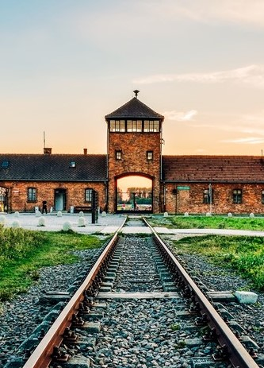

W dniach 20 do 27.05.2023 w murach naszego szkolnego internatu zamieszkały w ramach wymiany uczniowskiej nasze niemieckie koleżanki. Przyjechały do nas z ... aby poznać nasze miasta i historię. Jako uczniowie II klasy ZSTI w Gliwicach zobowiązaliśmy się aby towarzyszyć im oraz pomóc w zwiedzaniu. Ten międzynarodowy projekt pozwoli nam podszkolić język niemiecki, nawiązać nowe znajomości oraz ...
